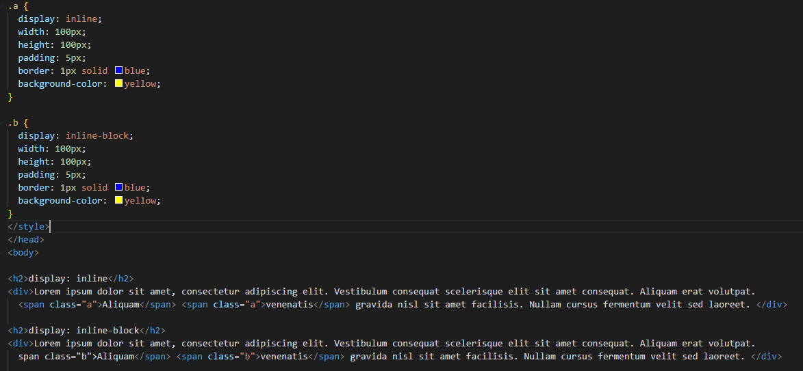
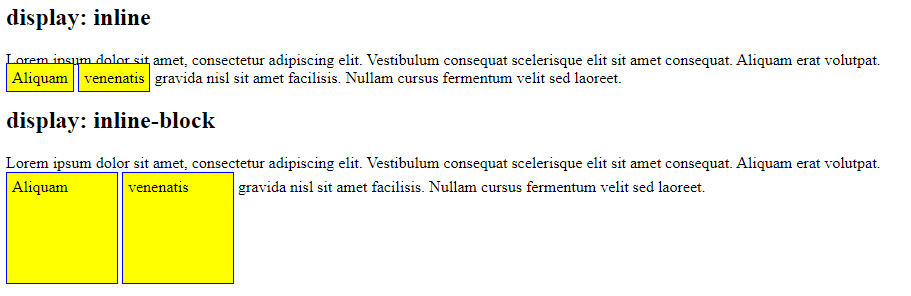

Display inline (the default for span) allows for certain parts of the line to be displayed as an element (such as with different colors or styling) on the same line, but only takes up the required width to display it. In this case the inline block might cover other lines without making room for those.
Display inline:block however can allow for margins and padding to be added to all four sides, and the other lines will respect that and allow for spacing if neccessary. The width property can also be used to make the box bigger as well which is not available with just a display:inline.
The HTML and CSS code:
The resulting display on a browser:
